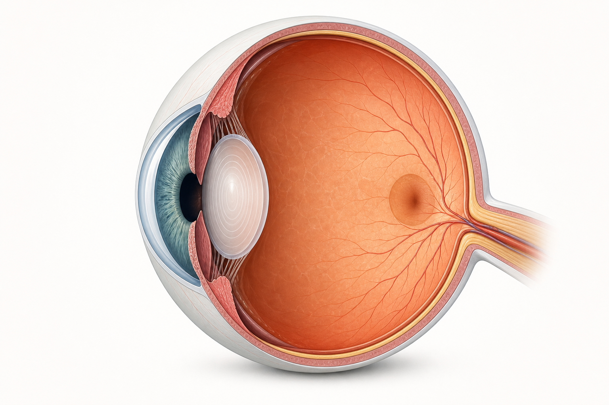
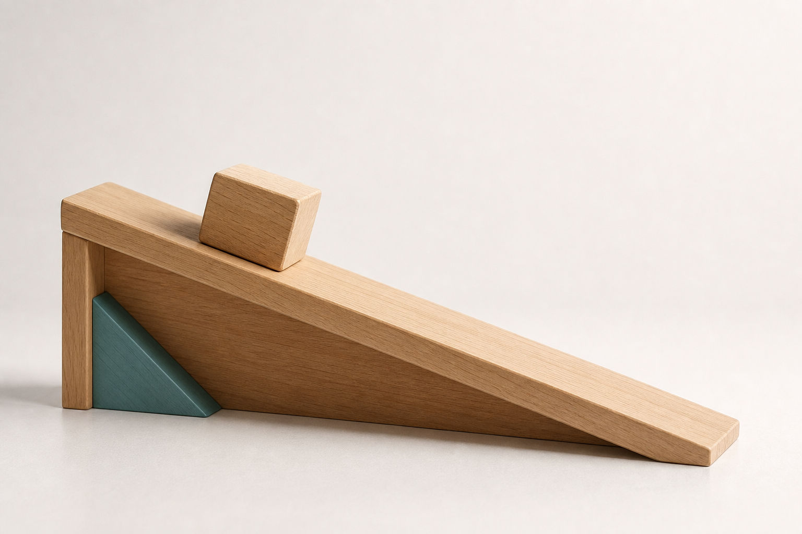

位图升级 · 校准
示意不该是扁平线描。
位图底 + 矢量标注层。
用 maolab 现有生图管线(gpt-image-2)实拍三张:写实器官、写实物理情境、氛围意境。「长什么样」重要的部分用生成位图(够档次),「结构/数值」精确的部分用矢量层叠加(引线/箭头/角度,像素级对齐、可核验)。幕面仍白为主。
01 · 生物 · 结构图解
写实眼球剖面(位图) + 精确引线标注(矢量)
器官「长什么样」由生成位图承担——半写实、有质感血管与光影;结构名称与引线是确定性矢量叠加层,像素级指向、可随数据/学段增删,绝不像位图那样标签错位。
02 · 观察眼球的结构与功能

角膜透光折光
虹膜 · 瞳孔调节进光
晶状体调焦成像
视网膜感光成像
黄斑视觉最敏锐
视神经传导冲动
位图 · 器官写实矢量 · 引线+名称+功能白为主幕面
对比:画廊里的旧版是扁平 SVG 线描眼球 —— 结构可辨但质感与档次远不及写实位图。
02 · 物理 · 受力分析
写实斜面情境(位图) + 精确力矢量(矢量)
物理情境实物(斜面/木块/质感)由位图承担;力的方向、大小、角度是必须精确的物理量,用矢量箭头叠加(重力竖直向下、支持力垂直斜面、摩擦力沿斜面)——错一个方向就是教学事故,绝不交给位图去「猜」。
06 · 例题斜面上木块的受力分析

重力 G竖直向下
支持力 N⊥斜面向外
摩擦力 f沿斜面向上
位图 · 斜面木块写实矢量 · 力箭头+方向+角度白为主幕面
对比:旧版是纯 SVG 简笔斜面。位图给真实材质与空间感,矢量保证力的方向/角度精确——各司其职。
03 · 语文 · 古诗「境」方向
氛围意境(位图,收在卡内) + 竖排诗句(矢量文字)
意境类靠位图的光影/氛围撑「想看」。但深色氛围图必须收在卡内——幕面留白为主,不整幅深底出血(呼应白为主令)。诗句是竖排精排文字层。
方向 A · 境
静夜思 · 李白
霜色的月光落在床前,一场关于故乡的静默。氛围由写实位图承担,幕面其余留白 —— 深底只在图卡内,不侵占整幕。
位图 · 意境氛围(卡内)矢量 · 竖排诗句幕面白为主
张力点(需你定):意境类天然偏暗,与白为主有冲突。此处解法是氛围图收在卡内、幕面留白。若你要更彻底的白为主,可让「境」方向也走亮调氛围(晨光/月白高调),或把「境」限定为少数高年级/特定题材使用。